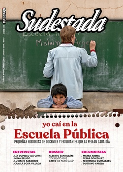

Buscar
Edición N° 157
Junio-Julio-Agosto 2019
Revista bimensual
Comprar edición impresaSumario
- Yo caí en la escuela pública
- El oficio de sentipensar
- “Lo veo a Darío multiplicado en muchos jóvenes”
- Dias de lluvia y frío
- "Mis convicciones están por encima de todo"
- "Seguiremos aquí hasta que nos deseen"
- Envejecer juntas. La vejez lésbica en resistencia
- Abrazo eterno
- Tejiendo agua. El adiós a Leopoldo Brizuela
- “La aventura es la punta de flecha"
- El trazo de la rebeldía
- Norma Plá. La jubilada insumisa
- Travesticidios: por qué marchamos el 28 de junio
- "La dictadura aprovechó la muerte de Cafrune para aleccionar a la música militante"